CRONACHE & DADI
CRONACHE & DADI
[ONE-SHOT OSR & DUNGEON CRAWLING]
🎧 Accendi l'atmosfera...
L'avventura si muove in un cupo territorio di frontiera dove il gelo morde la carne e il silenzio è rotto solo dal vento che sibila tra le rocce aguzze. Dominata da isolamento rurale, paranoia e un gelo innaturale che non intorpidisce solo i muscoli, ma offusca i ricordi.
Nei meandri della Valle dei Sussurri, un altopiano spazzato da bufere perenni, la terra ha iniziato a rigettare i resti di un antico culto dimenticato, noto come "l'Ordine delle Ossa Bianche". Secoli fa, i sacerdoti di questa setta furono murati vivi nei loro templi sotterranei, dai loro stessi seguaci per aver stretto un patto con un'entità primordiale capace di controllare i ricordi dei defunti.
Di recente, nel cuore della notte, alcuni abitanti del villaggio di "Pietra Storta" cadono in uno stato di trance catatonica, sospesi tra sonno e veglia. Abbandonano le proprie case per incamminarsi meccanicamente verso la montagna, inghiottiti da una nebbia innaturale che non si dirada mai. Nessuno di coloro che si sono addentrati nella nebbia ha fatto ritorno. Chi ha provato a seguirli racconta di un'atmosfera opprimente, fatta di pause innaturali e suoni anomali, avvertendo la presenza di creature invisibili che celano il loro passaggio. Tentare di fermarli con la forza si è rivelato fatale: i "Mandriani", chiamati in questo modo dalla comunità locale, reagiscono con una forza disumana e feroce, pronti a difendersi o ad attaccare a morte pur di non interrompere il loro pellegrinaggio. L'episodio che ha spezzato il fragile equilibrio della comunità ha visto protagonista un bambino, spintosi a seguire il padre durante la sua marcia notturna verso le pendici: il suo corpicino è stato ritrovato all'alba a ridosso di un masso, con il cranio fracassato.
Di fronte a tale orrore, il Barone Valdeno ha preferito mantenere il silenzio per non allarmare la guarnigione, ma Don Alise, l'anziano parroco del villaggio, ha deciso di agire scavalcando l'autorità locale. Sapeva che un'indagine ufficiale avrebbe attirato solo insabbiamenti, così ha scritto una supplica disperata indirizzata a fra' Vittore, l'archivista e confessore personale dell'Alto Cancelliere della Contea. Fra' Vittore, uomo di fede ma aperto alle discipline occulte, ha intercettato la lettera e, comprendendo la gravità della minaccia che rischiava di espandersi oltre i confini della valle, ha sfruttato la sua influenza per ingaggiare sottobanco la compagnia di personaggi, presentandola come una semplice missione di recupero di beni ecclesiastici trafugati.
Il fumo denso e dolciastro della pipa si solleva pigramente nell'aria pesante dello studio, mescolandosi all'odore acre della torcia e al gelo che filtra dagli stipiti delle finestre sbarrate. Il Barone Valdeno siede dietro una massiccia scrivania in legno di quercia nera, coperto da scartoffie, mappe geografiche ingiallite e tazzine di ceramica scheggiata. È un uomo tarchiato, con le spalle gravate da una pesante casacca di pelliccia di lupo che non riesce a scaldare il suo pallore; ha guance rubiconde solcate da fitte ragnatele di capillari, occhi piccoli e diffidenti incassati sotto sopracciglia cespugliose e dita tozze e unte che stringono il cannello d'avorio della sua lunga pipa. Lo studio è angusto, dominato da scaffali colmi di registri dei tributi e da una grande vetrata a losanghe da cui si scorge solo il bianco lattiginoso della tormenta che flagella lo sperone roccioso di Pietra Storta.
“Chi sano di mente oserebbe credere di possedere un potere del genere?“
... ripete il Barone Valdeno, piantando lo sguardo su Don Alise dopo aver soffiato una densa voluta di fumo grigio.
Il sacerdote non si scompone, stringendo tra le mani nodose il bastone da viaggio. Fa un passo avanti, superando la nuvola di fumo, e posa sul pesante tavolo di legno una mappa consumata dai viaggi e un sacchetto contente delle monete (20 oro).
“La follia non è credere che esista quel potere, Barone, ma fingere che non stia svuotando le nostre case“
Risponde Don Alise con voce ferma, guardando verso di voi.
“Signori, non vi abbiamo chiamati per una semplice scorta o per questioni di fede. La verità è che il villaggio di Pietra Storta sta morendo nel sonno. Quasi ogni notte, allo scoccare del gelo, brava gente del posto cade in catatonia e cammina dritta verso le pendici della montagna, inghiottita da una nebbia innaturale da cui nessuno fa ritorno. Chi ha provato a fermarli con le buone o con la forza ha trovato solo la morte, come il povero figlio di Berto, Ceseo, i cui resti sono stati trovati l'altra notte. E se il Barone preferisce proteggere il proprio orgoglio e la quiete della guarnigione, io ho scelto di spendere quel poco che ci resta per voi“
Don Alise sfiora la mappa e indica tre punti precisi, delineando le coordinate esatte per iniziare l'indagine senza brancolare nel buio:
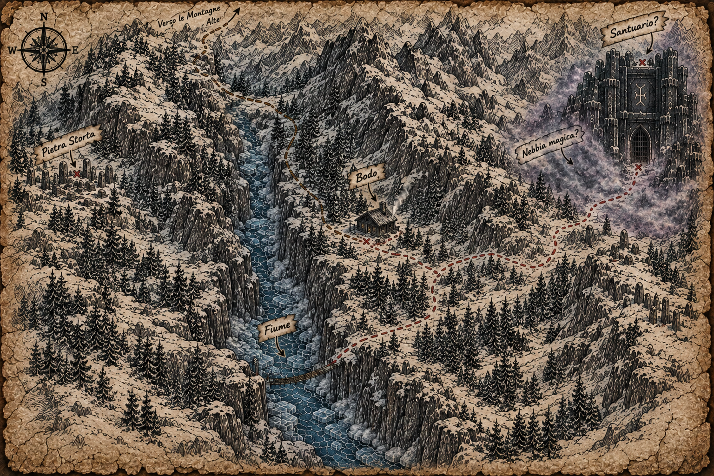
Mappa Valle dei Sussurri
“Mentre risalite il corso d'acqua verso i pascoli alti,
farete attenzione ai "Mandriani", i cittadini locali già caduti in trance che vagano come automi
armati di una forza disumana; affrontarli o aggirarli silenziosamente vi dirà cosa affrontate.
Sulla montagna, prima del tempio sepolto, cercate Bodo, un eremita mezzuomo burbero
ma saggio. È l'unico a conoscere i dettagli sul culto dimenticato dell'Ordine delle Ossa
Bianche e custodisce ciò che vi serve per aprire la via.
Vi servirà un oggetto che custodisce Bodo per varcare la soglia del tempio
sotterraneo, dove i sacerdoti furono murati vivi secoli fa, e scoprire cosa si cela dietro
la mente collettiva che sta richiamando i nostri morti.“
Concedi ai personaggi un breve spazio per fare domande al Barone Valdeno o a Don Alise nello studio. Se i personaggi provocano il Barone, questi minaccerà di cacciarli o di arrestarli per insolenza, costringendoli a fare affidamento unicamente sulla protezione di Don Alise.
Barone Valdeno
Scettico, orgoglioso, protettivo verso lo status quo della guarnigione.
Fuma costantemente la sua pipa per mascherare l'ansia. Vuole insabbiare il fenomeno per evitare
disordini politici.
Don Alise
Esasperato, coraggioso e disperato. Ha agito alle spalle del Barone ingaggiando
la compagnia tramite fra' Vittore. Usa toni fermi e protettivi verso la comunità.
La pipa del Barone: Se un personaggio esamina la pipa o i residui sul tavolo con una prova di Intelligenza o Percezione (CD 15), riconosce l'odore acre di una sostanza che altera la percezione, suggerendo che il Barone stesso potrebbe essere assuefatto o stia cercando di anestetizzare i propri nervi.
Scrivania: Rovistando tra i registri dei tributi (se riescono a distrarre il Barone o Don Alise), i personaggi scoprono che il numero delle famiglie a Pietra Storta è calato drasticamente negli ultimi mesi, smentendo la facciata di normalità e provando che le sparizioni vanno avanti da molto più tempo di quanto ammesso.
I giocatori valutano la rotta da intraprendere per lasciare le retrovie del villaggio e salire verso le pendici. Le strade a disposizione offrono sbocchi geografici differenti e conseguenze distinte: l'Opzione A (la capanna di Bodo) mette alla prova la pazienza del gruppo con l'incontro dell'eremita e la ricerca della lamina d'argento, sbloccando la chiave d'accesso al tempio; l'Opzione B (l'indagine interna nel villaggio) ribalta le priorità, spingendo a scavare tra le case e gli archivi di Pietra Storta alla ricerca di segreti dimenticati prima di affrontare il gelo; oppure, scegliendo di ignorare ogni sosta o preparazione, i personaggi possono tentare l'Assalto Diretto, sfidando la tormenta ed accedendo direttamente all'Atto III per affrontare i pericoli delle catacombe senza alcuna protezione o indizio.
Seguendo il corso del torrente pietrificato oltre il mulino diroccato, i personaggi avanzano nella morsa della tormenta. Mentre risalgono il corso del fiume ghiacciato, i personaggi si imbattono in due sagome che sembrano quasi barcollare sulla neve. Avvicinandosi, scoprono che si tratta di due Mandriani, i cittadini locali ormai svuotati nell'anima, con gli occhi spalancati e fissi nel vuoto, che arrancano meccanicamente verso la montagna.
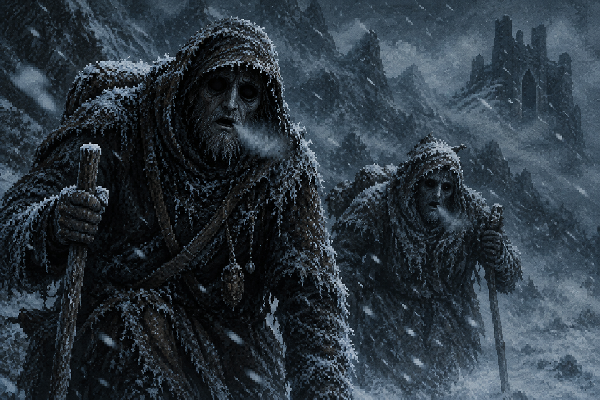
Mandriani
I personaggi possono decidere se evitare lo scontro aggirandoli silenziosamente (prova di Furtività - CD 16) oppure se affrontarli.
Se decidono di combatterli: I due mandriani non parlano e non provano dolore. Sono guidati dall'impulso del culto e reagiscono con una forza innaturale se ostacolati. Potranno notare subito che i loro corpi sono rigidi, freddi come il ghiaccio e che dalle loro bocche semiaperte fuoriesce un debole alito di vapore grigiastro.
SCHEDA PNG: Mandriano
Abitanti della valle catturati dal culto. Il loro cervello non riceve più impulsi, ma è
guidato da una frequenza fredda generata dall'altare primordiale del Santuario.
Fisicamente sono automi di carne: la temperatura corporea è pari a quella dell'ambiente circostante,
non sanguinano se feriti (al loro posto perdono una melma grigiastra e densa) e non avvertono alcun
istinto di autoconservazione.
Muovono passi pesanti e inesorabili, ignorando il dolore, le ferite mutilanti
o la perdita di arti. Non urlano, non parlano e non minacciano; l'unica spia della loro presenza è il
debole sibilo di vapore grigio che esce dalle labbra socchiuse ad ogni respiro meccanico.
Se un personaggio tenta di parlarci o di fermarli con la diplomazia, i Mandriani rispondono unicamente
con gesti rigidi e tentativi di afferrare il malcapitato per svuotargli i sensi.
La vera pericolosità dei Mandriani non risiede nei danni fisici che infliggono, ma nel
contraccolpo psichico alla loro distruzione. Quando il legame energetico che li tiene in piedi
si spezza bruscamente, l'energia accumulata rimbalza sul bersaglio più vicino.
Quando un Mandriano viene distrutto, i personaggi entro 1,5 metri devono effettuare una prova di Saggezza (CD 12), per non subire una Faglia Cognitiva: Perde temporaneamente quel ricordo e subisce lo svantaggio per tutta la durata dell'avventura, a meno che non trovi il modo di spezzare la maledizione. Tira 1d10 su questa tabella.
| 1d10 | Ricordo svanito | Faglia Cognitiva |
|---|---|---|
| 1 | Il nome del tuo cavallo o dell'animale domestico d'infanzia | Svantaggio nelle prove di Saggezza (Addestrare/Gestire Animali) e svantaggio alle prove di iniziativa (la tua reazione istintiva è rallentata). |
| 2 | Il sapore o la memoria del cibo e del ristoro | Svantaggio nei tiri salvezza contro la Fatica o gli effetti ambientali del freddo (il corpo non riconosce più il calore o il nutrimento). |
| 3 | La fisionomia della persona che ami o di un familiare | Svantaggio nelle prove di Carisma (Persuasione o Inganno) e incapacità di trovare conforto nei legami emotivi |
| 4 | Il motivo o il contratto per cui ti sei unito alla compagnia | Svantaggio nei tiri salvezza contro il Morale, la Paura o gli effetti di Charme/Influenza mentale. |
| 5 | Il nome del tuo paese natale o i punti cardinali di casa | Svantaggio nelle prove di Intelligenza (Sopravvivenza o Orientamento); se il gruppo si muove, rischiate di perdere tempo prezioso. |
| 6 | L'insegnamento o i trucchi del tuo primo maestro d'armi | Svantaggio temporaneo sul prossimo tiro per colpire effettuato con la tua arma principale (il gesto tecnico ti sfugge per un istante). |
| 7 | La sensazione del calore o del riposo fisico | Svantaggio nei tiri salvezza di Costituzione per mantenere la concentrazione o resistere alla stanchezza fisica. |
| 8 | La dinamica o la memoria della tua prima cicatrice/ferita | Subisci 1d4 danni necrotici immediati e il tuo punto ferita massimo si riduce temporaneamente di pari valore (il corpo dimentica come rigenerarsi). |
| 9 | Il giorno o la ricorrenza di una promessa importante | Svantaggio nelle prove di Saggezza (Percezione): lo sguardo si fa assente e perdi i dettagli periferici dell'ambiente. |
| 10 | L'ultima preghiera o il Credo della tua infanzia | Svantaggio su qualsiasi prova che richieda concentrazione mentale o arcana (se lanci incantesimi, c'è il 25% di probabilità che la magia fallisca sprecando lo slot). |
Raggiungete una capanna bassa e tozza, costruita con tronchi anneriti e mezza sepolta da cumuli di neve mista a fango. Intorno all'abitazione, il fumo denso di una stufa a legna si mescola a un odore acre di pellicce bagnate e radici essiccate. Sulla soglia, protetto da pesanti cortine di pelle di animale, vedete un halfling anziano dalla corporatura tarchiata, avvolto in strati di lana grezza e coperte consunte. Ha il volto solcato da rughe profonde, un occhio cieco e lattiginoso che punta il vuoto e mani nodose che stringono un bastone di ginepro intagliato con simboli arcaici.
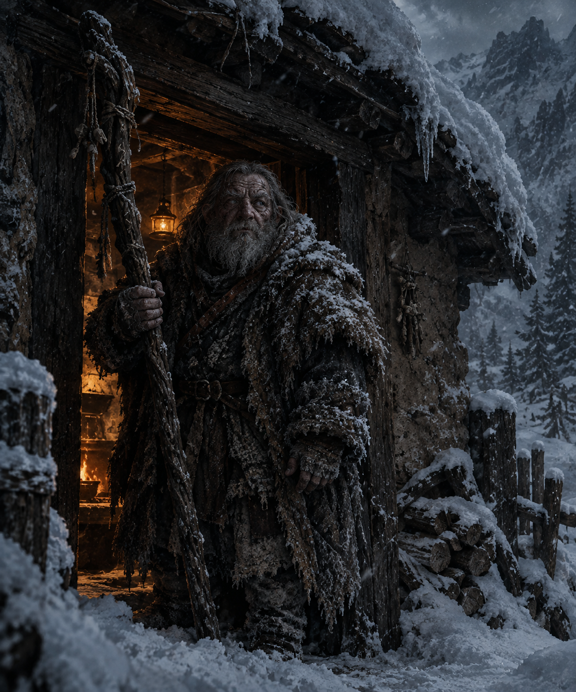
La Capanna di Bodo
“Che cazzo ci fate qui fuori con questo tempo? Siete venuti a cercar rogna o avete solo fretta di crepare congelati sulla mia porta?”
Bodo resta immobile sulla soglia, la corporatura tarchiata e avvolta in pelli scure che blocca l'accesso. Stringe tra le mani il suo bastone, osservandovi con occhio clinico, soppesando i vostri volti irrigiditi dal gelo prima di sputare nella neve.
“Qui non c'è tè caldo per voi, e la montagna non fa sconti a nessuno. Se cercate un tetto, dovete avere un motivo migliore di una brutta faccia e una tasca vuota. Avanti, sputate il rospo: chi vi manda a crepare quassù? E, soprattutto, cosa vi fa credere che io abbia voglia di ascoltarvi?”
I personaggi devono rompere il ghiaccio, giustificare la loro presenza per superare il suo scetticismo.
Quando il gruppo pronuncia il nome del Barone Valdeno, di Don Alise o accenna al Santuario, l'halfling non mostra stupore;
si limita a sorridere amaramente, rivelando gengive sdentate, prima di invitarli all'interno, dove
il calore della stufa stenta a vincere l'umidità delle pareti.
“Voi pensate che la terra sia viva, vero? Che d'estate respiri e d'inverno dorma. Quassù no. Quassù la terra è morta e marcia, e si è messa una corazza di ghiaccio che non molla la presa neanche quando batte il sole a picco. Il permafrost non è neve fresca. È fango, roccia e carne impastati insieme e congelati duri come l'acciaio da diecimila inverni. Non si scava con la vanga qui: ci vuole il piccone, e ogni colpo ti risuona nei denti come una martellata su un'incudine. Ma la cosa peggiore non è che non ci puoi piantare una fossa... è che il permafrost conserva. Quello che ci metti dentro non marcisce, non sparisce. Resta lì, ibernato. Bestie, attrezzi, soldati caduti secoli fa... se li tiri fuori interi, dopo cinque minuti all'aria aperta si sciolgono e puzzano come il primo giorno che sono morti.
E se cercate i responsabili di questo schifo, cercate nei libri di storia che nessuno legge più. C'era un certo Malkor, un alto sacerdote fuori di testa che si era fatto i mesi là sotto, nella Valle dei Sussurri. S'era convinto che avere un'identità fosse il cancro del mondo, che l'io fosse il muro che ci divideva dagli dei. La sua combriccola di fanatici pensava che la morte fosse solo un errore di trascrizione della memoria: volevano svuotare tutti, vivi e morti, per fare un unico grande alveare di menti senza nome, tutte sottomesse a quell'entità di ghiaccio.
Perciò vi avverto: se lassù, in fondo alla gola, rompete la crosta sbagliata... beh, quello che il ghiaccio ha tenuto al fresco per secoli potrebbe decidere di venire a fare due passi insieme a voi.”
Chi è Bodo?
Bodo non è un eroe, né un semplice eremita scontroso: è un sopravvissuto logorato dal tempo e dal rimorso. L'ultimo discendente di una linea di custodi locali dimenticata,
Bodo si è stabilito in questa baracca isolata ai piedi della montagna per una ragione precisa: fare da sentinella involontaria. Non è lì per proteggere il mondo per bontà d'animo,
ma perché sa che se qualcuno dovesse riaprire le porte del Sancta Sanctorum, la maledizione del permafrost si riverserebbe a valle, travolgendo quel poco di vita che ancora resiste.
Vive di stenti, mangiando radici marce, carne secca e bevendo acquavite scadente che si produce da solo per dimenticare il freddo che gli è entrato nelle ossa.
La sua conoscenza dell'antico Ordine di Malkor il Cavo e dei meccanismi del permafrost non deriva da studi accademici, ma da esperienza diretta e dolorosa. Anni fa, durante una tempesta disperata, Bodo e i suoi compagni di ventura si rifugiarono proprio nei cunicoli inferiori del complesso. Lì videro ciò che il ghiaccio custodiva: i corpi intatti, i rituali di estrazione della memoria e il liquido grigio. La maggior parte dei suoi compagni impazzì o fu assimilata dall'alveare di ghiaccio; Bodo riuscì a fuggire a fatica, portandosi dietro un terrore viscerale che maschera con la sua proverbiale ruvidezza. La lamina non è finita per caso nelle sue mani. Durante la sua fuga disperata dal complesso sotterraneo, Bodo strappò la lamina dalle grinfie di un sacerdote catatonico dell'Ordine.
Una volta che i personaggi hanno ottenuto la fiducia di Bodo, dimostrandogli che vogliono fare sul serio e vogliono liberare la Valle dei Sussurri da questo male, l'halfling compirà i suoi ultimi gesti prima di congedarli.
L'eremita estrae da sotto una panca di legno tarlato una vecchia scatola di piombo. All'interno non ci sono oggetti preziosi, ma una lamina d'argento incisa con le frequenze armoniche per interagire con l'altare situato alla fine del "Cammino della Penitenza", e una mappa di esso.
Bodo stringe la lamina tra le sue dita callose, la superficie di ghiaccio opaco che emana un freddo innaturale, prima di passarla nelle mani dei personaggi con uno sguardo cupo e pesante come la roccia:
“Questa non vi scalderà le ossa, ma quando arriverete laggiù, nella sala dove il respiro si fa pietra e il passato vi scivola via dalle dita come sabbia bagnata... beh, lì troverete l'altare. Quello è il cuore che tiene in piedi l'incubo di Malkor. Su questa lastra ci sono le parole che i vecchi della montagna ripudiavano persino di pensare. Leggetele ad alta voce quando sarete a un passo dal gelo definitivo, e pregate che la pietra vi ascolti prima che si spenga l'ultimo ricordo.”
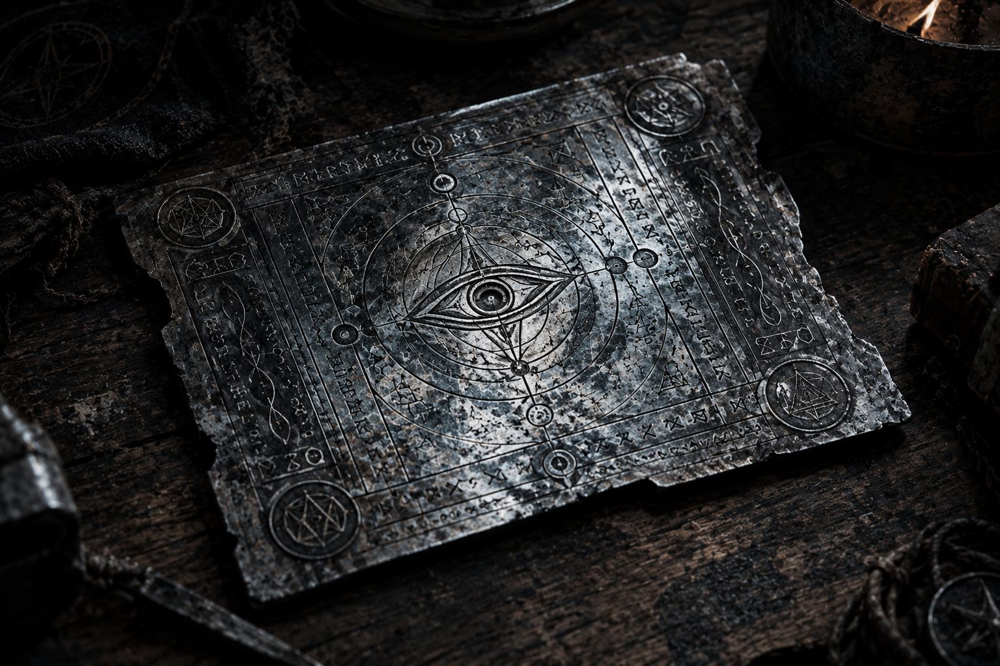
Lamina d'argento
• Oggetto magico, strumento rituale •
Una spessa lastra rettangolare di ferro scuro e opaco, bordata d'argento brunito. La superficie è fittamente incisa con glifi geometrici spigolosi e rigidi che sembrano quasi intagliare la materia anziché decorarla. Chiunque la stringa a mani nude avverte subito una sgradevole sensazione di freddo paralizzante, come se il metallo stesse rubando il calore delle dita.
Le parole incise sopra richiamano un antico e severo rituale in una lingua oscura, antica, in grado di spezzare il legame con l'altare e spogliare Malkor della sua invulnerabilità.
“Snaga i gulg, burzum ash. Golug i thrak, ghaash bagronk; i malkor gimbatul, ash nazg krimp, ghâsh-ishi krimpatul. Urok durak agh burzum ghaash!“
I personaggi che comprendono il Linguaggio Oscuro riescono a comprenderne il significato:
“Scollega la mente, spezza l'alveare. Ritorna al silenzio, o freddo che divori i ricordi; la carne si disperde, il nome si cancella, l'ombra svanisce nel vento. Che il gelo muoia e l'io ritorni!“
Effetto meccanico: Rimuove istantaneamente l'invulnerabilità o lo scudo protettivo del boss, spezzando il legame con l'altare sacrificale e infliggendogli un tremendo shock energetico (o bloccandone le capacità rigenerative per i turni successivi).
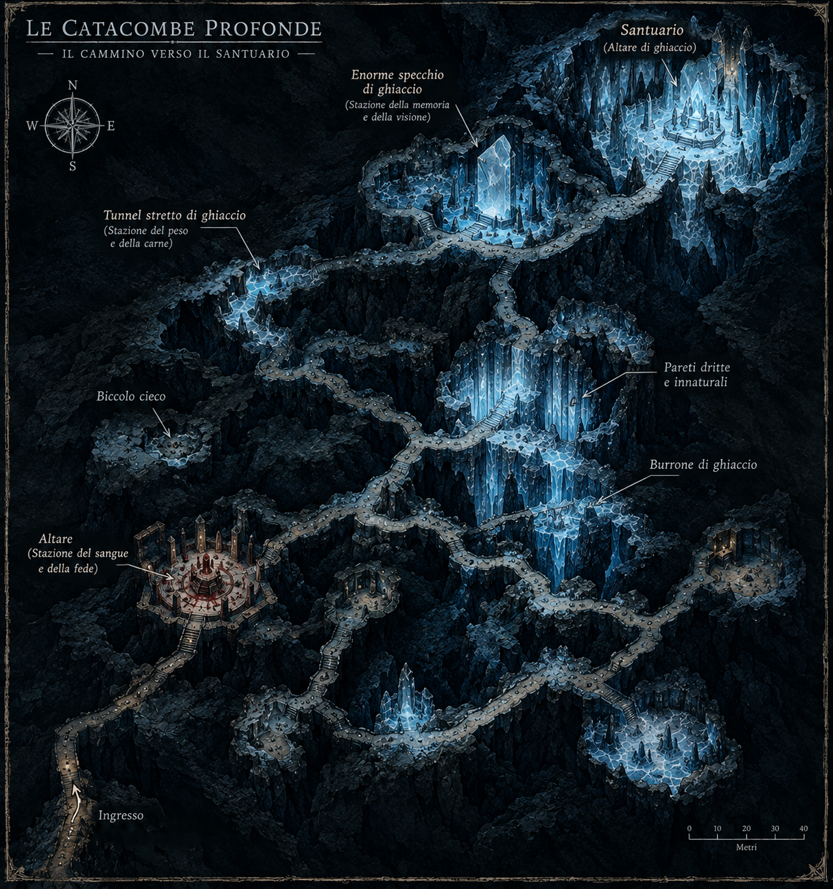
Mappa percorso Santuario delle Ossa bianche
Prima che il gruppo esca nella tormenta, Bodo li afferra per un polso con la sua mano gelida e nodosa, ammonendoli con un sussurro strozzato:
“Ricordate chi siete adesso. Quando il freddo vi entrerà nelle ossa e comincerete a dimenticare il nome dei vostri cari o il motivo per cui impugnate le vostre lame, non guardate mai le pareti di ghiaccio: vi restituiranno volti che non vi appartengono. Se vi fermate a pensare a chi eravate prima di arrivare qui, siete già morti.“
Con la mappa aggiornata, la lamina d'argento in tasca e il peso del patto sulle spalle, lasciate la capanna e vi mettete in cammino lungo il sentiero. La tormenta si intensifica, ma le impronte dei mandriani scomparsi si fanno più nitide sulla neve fresca.
Pietra Storta si stringe attorno al costone roccioso come una carcassa aggrappata a una parete di lavagna. Il villaggio non accoglie i viaggiatori con la quiete rustica delle comunità di montagna, ma con un silenzio denso, quasi artificiale, in cui ogni rumore — il calpestio degli stivali sul fango gelato, il cigolio di un'insegna arrugginita — rimbomba come una nota fuori tempo. Le case sono torri tozze di pietra locale, con i muri anneriti dal fumo dei vecchi focolari e le finestre sbarrate da assi di legno massiccio. Non ci sono bambini che giocano per le strade, né botteghe aperte: le poche sagome che si intravvedono dietro i vetri appannati spariscono non appena avvertono l'ombra di estranei. L'aria odora di legna umida, stalle abbandonate e di quel caratteristico, acre profumo di ozono e ghiaccio stagnante che scende dai canaloni superiori.
Ogni vicolo sembra condurre inevitabilmente verso l'alto, con lo sguardo che cozza sempre contro la mole imponente e minacciosa della montagna, avvolta da una nebbia perenne che sembra respirare insieme alla valle.
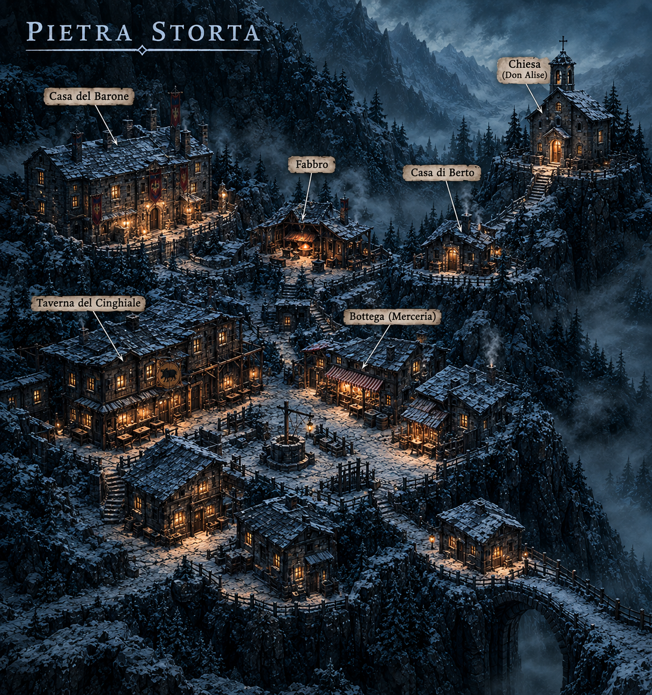
Pietra Storta
Il villaggio è ostile e terrorizzato. La gente ha paura del Barone Valdeno e non si fida degli stranieri. Per ottenere informazioni utili, i personaggi devono muoversi con cautela, corrompere i testimoni o superare prove sociali Carisma, Persuasione o Intimidazione (CD 13). Ogni passo falso o indagine troppo rumorosa allarma le spie del Barone o spinge i residenti a barricarsi in casa.
L'investigazione si snoda attraverso tre piste principali che i personaggi possono approfondire:
Il sentiero per le pendici abbandona ben presto ogni parvenza di via battuta, trasformandosi in una cicatrice di pietra e fango gelato che si arrampica lungo il costone della montagna. La vegetazione scompare, sostituita da arbusti scheletrici vetrificati dalla brina. Più salite, più l'aria si assottiglia e si raffredda, caricandosi di un ronzio sordo e innaturale che sembra vibrare direttamente all'interno delle tempie. Una nebbia densa, color ardesia, cala dai canaloni superiori, cancellando ogni punto di riferimento e trasformando la marcia in un esercizio di pura sopravvivenza.
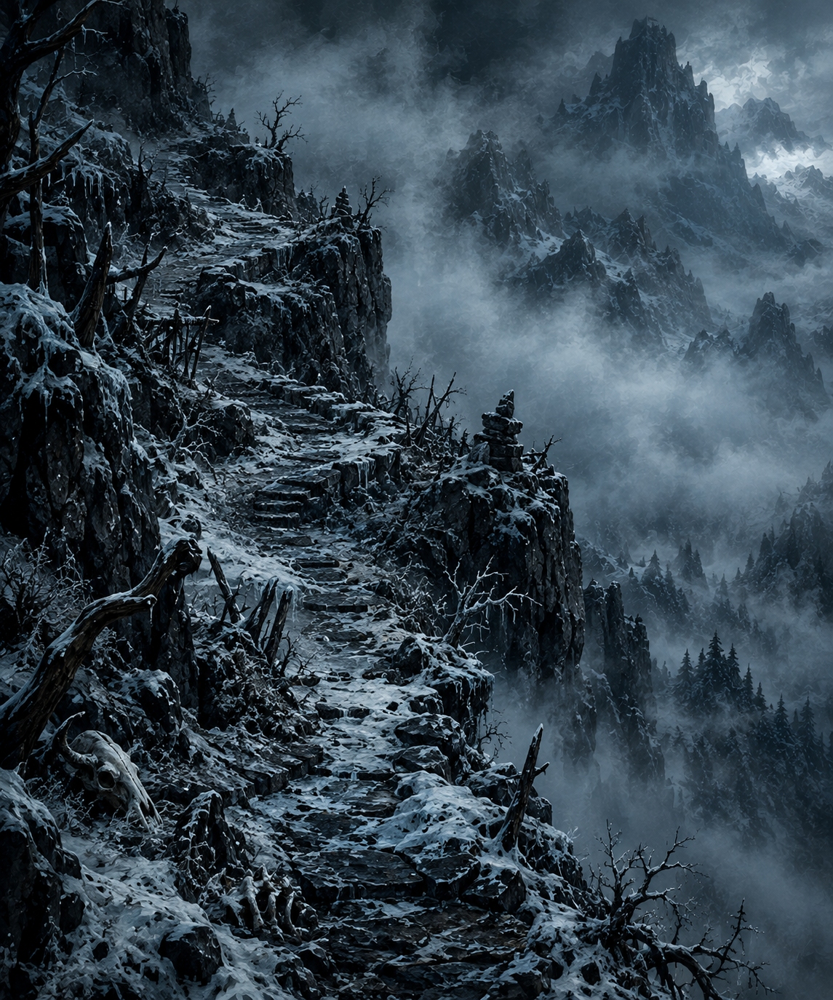
Il sentiero
Per avanzare lungo il sentiero e raggiungere il complesso nascosto, i personaggi devono affrontare una prova di Sopravvivenza (o Atletica/Resistenza a seconda del sistema di gioco).
Barcollanti e con il respiro che si spezza in nuvole di vapore gelido, emergete infine dalla nebbia opprimente. Di fronte a voi si spalanca la ciclopica fenditura nella roccia viva che segna l'ingresso del Santuario: stipiti di pietra annerita su cui sono scolpiti volti urlanti privi di occhi, e una soglia che profuma di morte, pronta a risucchiarvi nell'oscurità terminale delle catacombe.
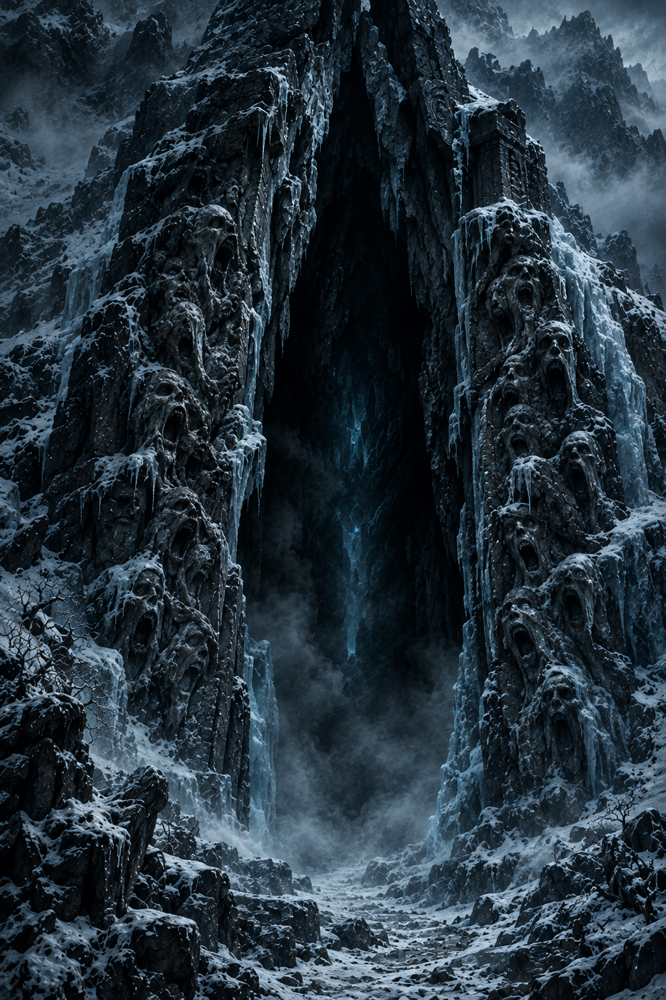
La Fenditura
Oltrepassata la soglia ciclopica, un'ondata di aria gelida e viziata si riversa all'esterno,
recando l'odore stantio di pietra tombale e polvere millenaria.
Più scendete in profondità, più la roccia cede il passo al permafrost vivo.
Le pareti di ghiaccio riflettente non sono trasparenti: imprigionano frammenti di luce e
sagome sfocate. Chi si ferma a fissare i riflessi vede scorrere frammenti di vite dimenticate,
volti di sconosciuti o scene del proprio passato che svaniscono lentamente nella foschia interna
del ghiaccio, logorando la psiche.
Ingresso Montagna
Vi ritrovate confinati in un corridoio di roccia grezza e scura, stretto e opprimente.
Le pareti sono basse e irregolari, ricoperte da una patina di umidità gelida che rende le pietre scivolose
al tatto, mentre il pavimento in terra battuta e roccia si insinua in discesa verso
il cuore della montagna. L'aria è immobile, spessa e fredda, priva di qualsiasi ricambio.
Da questo primo tratto angusto, il sentiero sotterraneo avanza dritto per pochi metri prima di aprirsi leggermente davanti a
voi: sulla sinistra, una breve rampa di gradini intagliati sale verso un'area isolata dominata da monoliti di pietra,
mentre la via principale prosegue inoltrandosi nell'ombra dei cunicoli.
Le vostre torce faticano a fendere l'oscurità, proiettando bagliori tremolanti sulle pareti strette che sembrano
stringersi a ogni passo... poi una voce, che risuona nelle vostre teste: non ha nulla di umano, sorda, cavernosa e immensa.
“Ogni passo vi porta più a fondo nella mia tomba... e ciò che avete portato con voi, presto apparterrà al gelo.“
Vicolo cieco
Il tunnel si restringe improvvisamente, soffocato da lastre di ghiaccio azzurrognolo che sporgono dalle pareti
come fauci socchiuse. Qui l'aria è immobile, densa di un silenzio innaturale che azzera ogni eco.
Il passaggio termina bruscamente contro una parete di roccia viva e permafrost puro. Osservando il ghiaccio che vi
circonda, notate i resti congelati di un vecchio esploratore.
Burrone di ghiaccio
Una voragine profonda e tagliente taglia in due la galleria. L'unico modo per superarla è un vecchio ponte di pietra crollato
per metà, ora sostituito da una lastra di ghiaccio lucida e fortemente inclinata che scivola nel buio totale.
Dal fondo della voragine sale un ronzio sordo e vibrante, accompagnato da un odore ferroso di sangue vecchio.
Pareti dritte e innaturali
La roccia naturale cede improvvisamente il passo a superfici geometriche impossibili: pareti di pietra scura,
levigata a specchio con una precisione millimetrica che nessuna mano umana o scavo minerario potrebbe giustificare.
I blocchi combaciano senza una goccia di malta, freddi e innaturali al tatto. Su di essi corrono solchi verticali
riempiti di una brina nerastra... ogni sussurro rimbalza amplificato, come se le pareti stesse stessero ascoltando.
"Stazione del Sangue e della Fede"
Vi trovate davanti a un altare di pietra nera e brina, sulla cui superficie è incisa una cavità a forma
di palmo umano, circondata da canalicoli di scolo colmi di ghiaccio antico. Quando vi avvicinate,
la voce nella vostra testa sussurra:
“Il vostro sangue o spezzate il vostro ferro per incidere il gelo“
"Stazione della Memoria e della Visione"
Procedendo nell'oscurità, l'antro si apre davanti a una grande lastra di ghiaccio specchiante che riflette
non il vostro aspetto attuale, ma i volti di cari perduti o rimpianti rimasti in sospeso. La voce torna a
vibrare nelle tempie, gelida e imperiosa:
“Il passato è un peso inutile; cedetemi ciò che eravate per vedere ciò che vi circonda.“
"Stazione del Peso e della Carne"
L'ultimo sbarramento si svela come un cunicolo di ghiaccio vivo, stretto e costonato di lame taglienti
cristallizzate, attraverso cui l'unica via d'uscita obbliga a strusciarsi direttamente contro le pareti specchianti.
Il sussurro nella montagna vi avverte:
“La carne morbida non può calpestare il santuario; strofinatevi contro il freddo e lasciate che vi marchi“
Prima di raggiungere il Santuario, i personaggi sono costretti a percorrere Il Cammino della Penitenza: non esistono enigmi con risposte giuste o sbagliate, né trappole da disinnescare con l'ingegno: ogni prova è un baratto morale e fisico. Il dungeon esige un tributo per procedere, costringendo i PG a scambiare una parte di sé stessi per ottenere un vantaggio disperato in vista dello scontro finale.
Le prove si presentano come nicchie o altari incassati nel ghiaccio riflettente, dove un'iscrizione bagnata di brina pone un dilemma spietato. Ogni scelta comporta una perdita permanente o temporanea (un fardello) ma garantisce in cambio un potere, una resistenza o una risorsa cruciale per affrontare i cultisti.
Negli altri ambienti, puoi decidere di affidarti a questa tabella degli imprevisti:
| 1d6 | Imprevisto | Effetto |
|---|---|---|
| 1-2 | Teschio trappola | Un teschio cade dalla parete, frantumandosi e attivando una dardi-trappola. |
| 3-4 | Corrente fredda | La torcia principale di un personaggio si spegne improvvisamente. |
| 5 | Pipistrelli | Un branco di pipistrelli giganti sbuca dal nulla disturbando i personaggi. |
| 6 | Crollo parziale | Una scossa di terremoto fa crollare scaffali pieni di urne cinerarie. |
Una volta affrontata l'ultima prova del soffocante "Cammino della Penitenza", le catacombe si aprono in una vasta sala dove il tempo e la pietra sembrano essersi congelati per sempre. Al centro della caverna sorge un imponente altare di ghiaccio puro e traslucido, all'interno del quale si agitano piccole e frenetiche ombre grigie, imprigionate come anime dolenti nel cristallo...
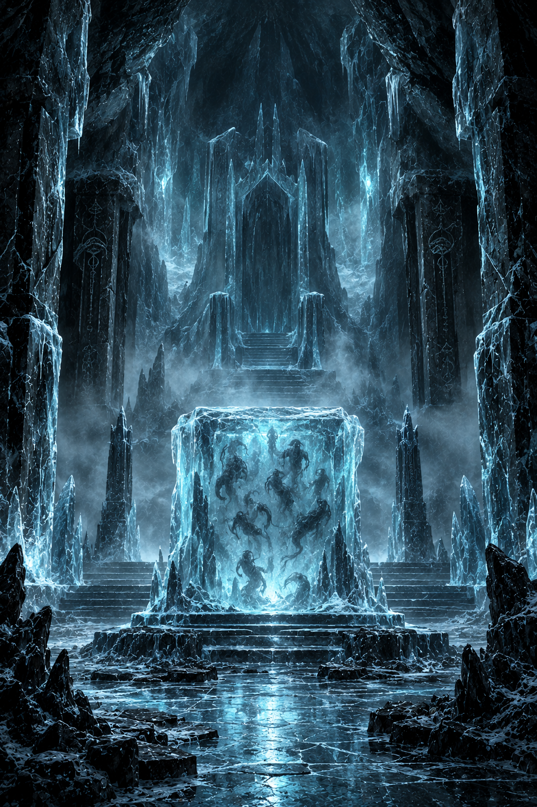
Il Santuario delle Ossa Bianche
... dietro l'altare, immobile su un trono scavato direttamente nel permafrost vivo, una figura titanica e spettrale si erge, unendo la propria massa imponente direttamente alle stalagmiti di ghiaccio. Il suo volto è del tutto celato da una visiera di ferro e brina da cui fuoriescono densi sbuffi di vapore gelido. Sul torace e lungo i lembi del mantello affiorano macabri teschi umani incastonati nel ghiaccio, come reliquie di anime assorbite nell'alveare. Intorno a lui, il gelo sembra obbedire a ogni suo minimo comando, pronto a spegnere il calore di chiunque osi sfidare l'oblio.
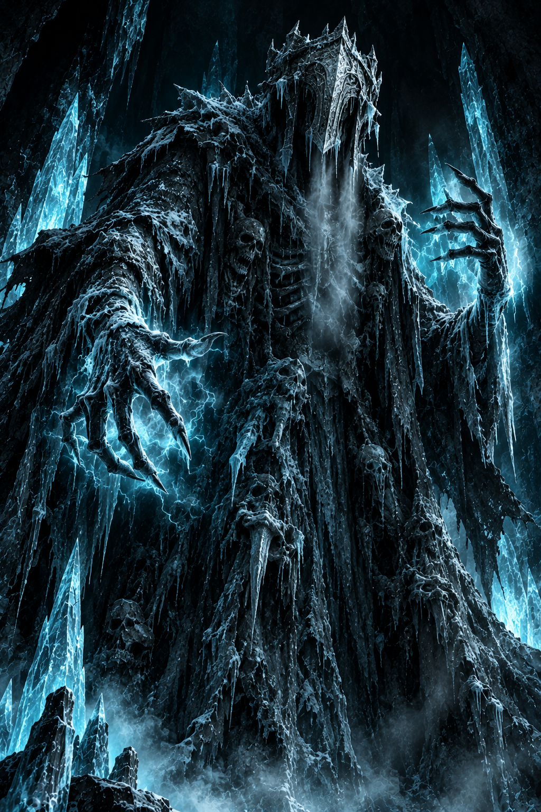
Malkor
“Avete scalato la montagna e offerto il vostro tributo solo per finire qui, nel mio palmo. Credete di essere eroi in cerca di giustizia, o forse pensate che il Barone vi abbia mandato a liberare queste terre? Illusi. Con il nobile abbiamo stretto un patto semplice: lui guarda altrove, finge di ignorare i nostri riti, e noi lasciamo che il suo dominio continui a marcire indisturbato nella valle.”
Malkor si sporge in avanti, le dita affusolate e gelide che sfiorano la superficie dell'altare, mentre le ombre grigie all'interno fremono affamate:
“Non vi offrirò alcuna via d'uscita, né patti di convenienza. Non mi interessa la vostra alleanza, e i vostri titoli o le vostre spade valgono meno della brina sotto i vostri stivali. Voglio ciò che avete di più prezioso, ciò che avete accumulato in ogni vostro trionfo e in ogni vostra cicatrice: i vostri ricordi. Freschi, intatti, intrisi del calore di avventurieri forti. Voi mi consegnerete le vostre memorie, pezzo per pezzo, e la montagna si accenderà della vostra vita mentre voi svanirete nel nulla.”
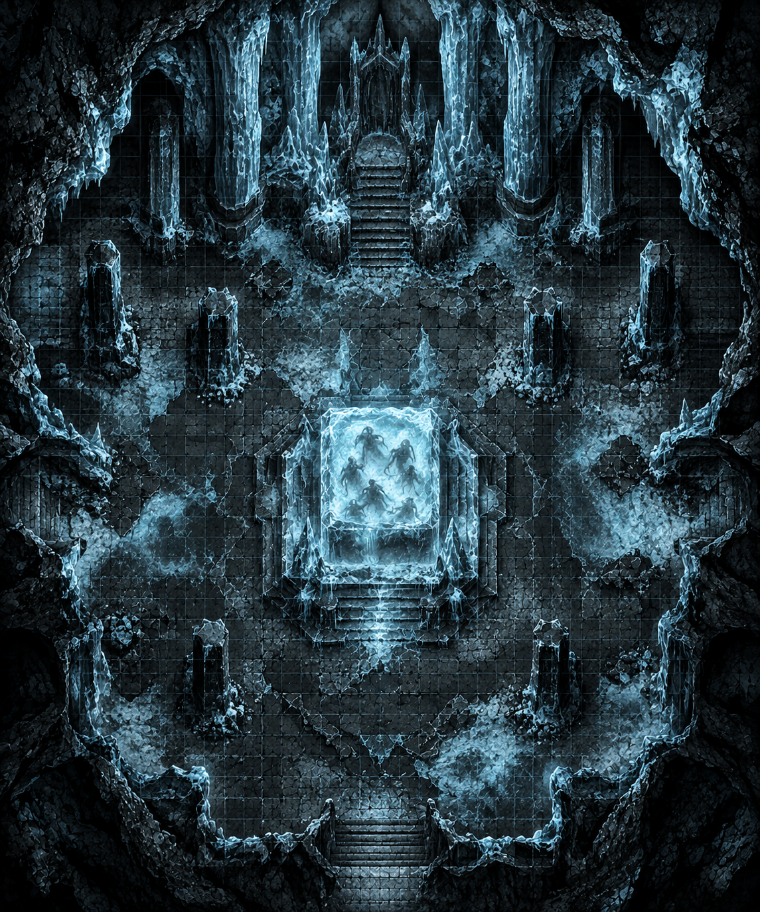
Mappa Tattica Santuario delle Ossa Bianche
Malkor non darà molta scelta ai personaggi, il suo obiettivo è quello di risucchiare i loro ricordi, quindi li attaccherà subito.
SCHEDA PNG: Malkor
Una volta distrutto, Malkor si dissolve in un cumulo di fango, brina nera e scaglie metalliche, lasciando sul terreno la corona geometrica di ghiaccio e frammenti purificati del liquido grigio.
Il silenzio che cala sulla vasta sala, quando il fumo e i frammenti di permafrost si diradano attorno al grande altare di ghiaccio, ha il peso di un giudizio sospeso. Che il trono di Malkor il Cavo sia ora vuoto, frantumato in una pioggia di schegge d'argento e cristallo, o che l'entità sia semplicemente svanita nelle profondità sotterranee in attesa di un nuovo inverno, il mondo fuori non è rimasto immune al passaggio dei superstiti. Le nebbie ardesia che soffocavano la valle iniziano lentamente a diradarsi, lasciando che la luce fredda dell'alba torni a baciare Pietra Storta e i tetti del feudo del Barone.
I sopravvissuti emergono dalle catacombe segnati nel corpo e nella mente, portando addosso i moniti indelebili del Cammino della Penitenza: memorie svanite, carni indurite dal gelo e armi logorate dal baratto. La valle riprende a respirare, ma il potere politico del Barone e i segreti sepolti tra le montagne rimangono un'ombra ingombrante. Nulla potrà restituire ciò che è stato ceduto agli altari della montagna, e mentre i personaggi fanno ritorno verso i confini civilizzati, resta il dubbio silenzioso su chi abbia davvero vinto questo scambio con l'oblio.
Per azzerare i tempi morti iniziali, distribuisci queste schede ai giocatori.
(Sistema adottato: D&D 5e)
★ BACKGROUND ★
Cresciuto ai margini di due mondi differenti — rifiutato dai circoli urbani e guardato con diffidenza dai clan selvaggi — ha scelto di trovare la propria casa nella solitudine delle terre di confine. Abile tracciatore e cacciatore solitario, vive di ciò che la natura offre e si unisce occasionalmente a carovane o gruppi di viaggiatori unicamente per fare da guida attraverso i passi più pericolosi e inospitali.★ CARATTERISTICHE ★
★ BACKGROUND ★
Figlio di un mercenario umano e di una mercante mezzorca, ha scoperto la sua natura quando un pericolo mortale ha risvegliato il sangue draconico che scorreva nelle sue vene, incenerendo i suoi aggressori. Braccato per la sua magia incontrollabile, si è unito a compagni d'avventura per trovare protezione, mimetizzare la sua natura ed evitare che il fuoco dentro di lui finisca per divorare chiunque gli stia vicino.★ CARATTERISTICHE ★
★ BACKGROUND ★
Nata con tratti infernali che hanno spinto la sua famiglia a emarginarla, ha incanalato il disprezzo e l'isolamento in una rabbia sorda e implacabile. Ha imparato a sopravvivere da sola nelle terre selvagge, usando il fuoco della sua stirpe e la forza bruta per difendersi da chiunque la vedesse come un mostro. Viaggia con il gruppo perché la disciplina della strada le offre una bizzarra parvenza di accettazione, oltre a una paga costante.★ CARATTERISTICHE ★
★ BACKGROUND ★
Cresciuto all'interno di un monastero isolato arroccato sulle alture, ha trascorso anni a forgiare il proprio corpo e la propria mente attraverso la ripetizione estenuante di forme e meditazioni. Quando il monastero è stato abbandonato o isolato dalle circostanze, ha scelto di scendere a valle per mettere alla prova i suoi insegnamenti nel mondo reale, offrendo il proprio pugno in difesa dei deboli e cercando l'illuminazione attraverso l'esperienza diretta. Si unisce ai compagni per senso di cameratismo e per testare i propri limiti contro le vere avversità della strada.★ CARATTERISTICHE ★
Hai completato la lettura di questa one-shot. Vuoi ricevere altre avventure pronte all'uso, risorse esclusive per Master e unirti a un tavolo attivo di creatori e giocatori?
 Discord
Discord
 Ko-Fi
Ko-Fi
 YouTube
YouTube